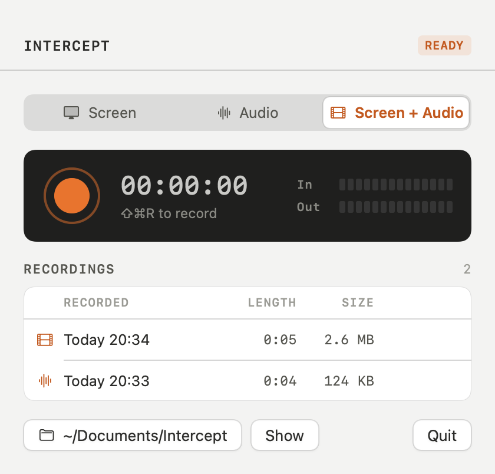

One button records your microphone and every sound your Mac plays — and, if you like, the whole screen — into a single file you can open anywhere.
Download for macOS
The display, with no sound. Doesn't need the microphone.
.mp4 · HEVC · native resolutionYour microphone and everything your Mac plays, mixed into one track.
.m4a · AAC · 48 kHz stereoThe screen and both sides of the sound, in one video.
.mp4 · 30 fps · one audio trackYour voice and the other person's are mixed into one track, so any player hears the whole conversation.
Record the main display, or every display side by side, laid out the way they sit in System Settings.
Intercept saves every 10 seconds. If the Mac crashes or loses power, it finishes the recording next time it opens.
It saves what it has, shows Paused, and starts a new file by itself when you wake the Mac and unlock it.
Press the big ember button, or ⇧⌘R. It also lives in the menu bar, with a timer while it records.
Recordings go to ~/Documents/Intercept, or a folder you pick, and open in QuickTime, VLC or any editor.
Intercept has no accounts, no analytics and no servers. It never connects to the internet. Your recordings are ordinary files on your disk, and only you decide where they go.
Requires macOS 26 (Tahoe) or later on Apple Silicon. Signed with a Developer ID and notarized by Apple, so it opens without warnings. Please follow the law where you live and tell people when you record them.